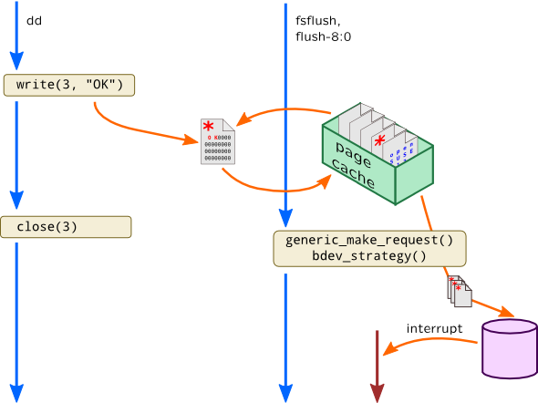

Asynchronicity in kernel
Let's return to our scripts, scsitrace.stp and sdtrace.d which we had introduced in previous section, Block Input-Output. We tested it with block I/O. If we create a filesystem on block device and try to write to it, we will see some interesting names of processes which actually perform the write. I.e. on Solaris:
PROC: 5/15 zpool-tiger
or on Linux:
PROC: 643/643 flush-8:0
This is internal system process which is not related to a process which is actually initiated write() call.
This is called an asynchronicity, a common kernel idiom when requests are kept in queues and being flushed to receiver at an unspecified moment of time (i.e. when device is ready, when we collected batch of adjacent requests, etc.). That flush is performed by separate kernel process (note how it is named in Linux) which has its own context. In our example write() system call won't actually start block input-output but updates page in page cache making it dirty (incorrect ZFS as it actually queues ZIO operation). Then writeback mechanism in Linux or fsflush daemon in Solaris is awoken. They walk dirty pages in page cache and write them back to stable storage. Finally, when disk finishes requested operation, bus driver will generate an interrupt which will create three independent contexts where request was handled:

This makes thread-local variables useless for such cases.
To overcome this situation we can use associative arrays, but instead of using process ID or thread ID we have to use something stable for a whole request execution. We can save PID using that key and then access it from interrupt probe by using same key and print it.
In our example it would be address of page in Linux:
# stap -e '
global pids;
probe module("ext4").function("ext4_*_write_end"),
module("xfs").function("xfs_vm_writepage") {
page = $page;
pids[page] = pid();
printf("I/O initiated pid: %d page: %p %d\n",
pid(), $page, gettimeofday_ns());
}
probe ioblock.request {
if($bio == 0 || $bio->bi_io_vec == 0)
next;
page = $bio->bi_io_vec[0]->bv_page;
printf("I/O started pid: %d real pid: %d page: %p %d\n",
pid(), pids[page], page, gettimeofday_ns());
} '
…
I/O initiated pid: 2975 page: 0xffffea00010d4d40 1376926650907810430
I/O initiated pid: 2975 page: 0xffffea00010d1888 1376926650908267664
I/O started pid: 665 real pid: 2975 page: 0xffffea00010d4d40 1376926681933631892
Note that despite the fact that process IDs in filesystem and block I/O probe are different, address of page structure is stable here.
Same works for Solaris -- we can rely on dbuf pointer which represents a dnode buffer:
# dtrace -n '
dbuf_dirty:entry {
pids[(uintptr_t) arg0] = pid;
printf("I/O initiated pid: %d dbuf: %p %d",
pid, arg0, timestamp);
}
dbuf_write:entry {
this->db = args[0]->dr_dbuf;
printf("I/O started pid: %d real pid: %d dbuf: %p %d",
pid, pids[(uintptr_t) this->db], this->db,
timestamp);
} '
This technique is usually used request extraction -- in ideal case we could observe all request handling from user clicking in a browser through network I/O, processing in web server, accessing database and, eventually, block I/O caused by that.
Modern kernels have low-level primitives for building such asynchronous mechanisms. We will discuss some of them later.